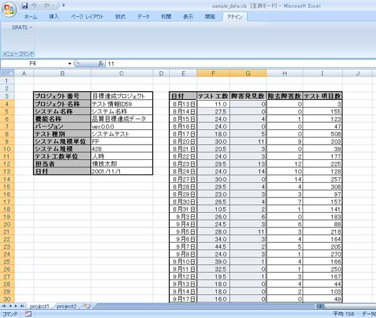
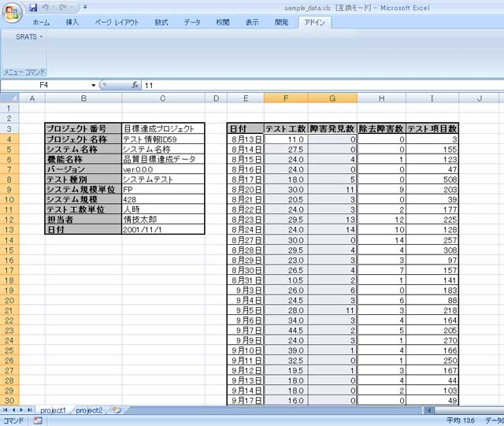
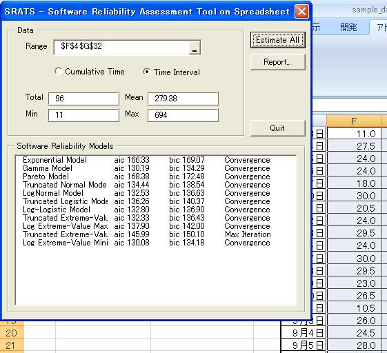
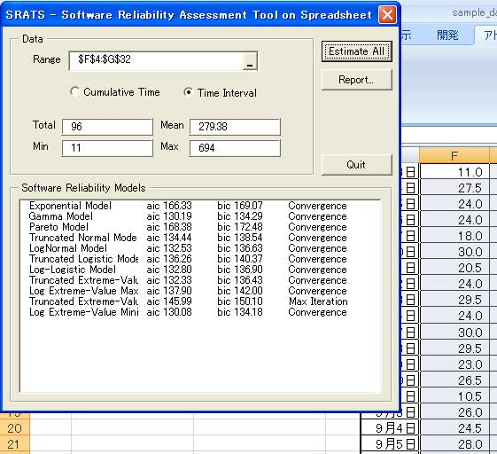
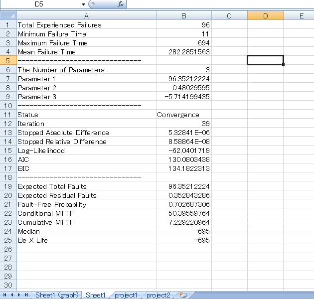
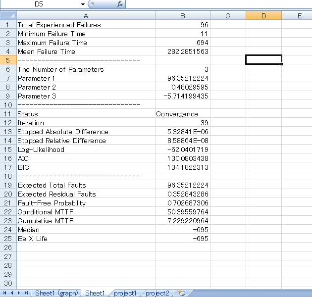

使用例
フォールトデータ
使用例では（株）構造計画研究所が作成している「信頼度成長曲線作成ツール」で配布されいるサンプルデータを使用します．フォールトデータは Excel 上で図１のようにまとめられているものとします（フォールトデータサンプルのダウンロード）． ここの例では，フォールトデータは日単位の集計であり，それぞれ次の項目からなっています．- テスト日付
- テスト工数
- 発見障害数
- 修正障害数
- 消化したテスト項目数
図１：障害データ


データの選択
SRATS2010 では時間間隔，累積時間のいずれも利用できるので，ここではテスト工数を時間軸として評価を行います．日単位のテスト工数と発見障害数の２列を選択し，SRATS を起動します．このとき，メインフォーム上では Time Interval を指定します．また，日単位の消化テスト項目数を利用することも可能ですが，この場合は障害発見数の左に列がくるように移動させてください．推定・モデル選択
選択したデータに対してすべてのモデルのパラメータ推定を行います．メインフォームの「Estimate All」で推定を行います．推定結果のサマリーから「Log Extreme-Value Min (Weibull) モデル」が AIC, BIC どちらの基準でも最良になることがわかります（図３）．図２：推定結果


評価と管理
「Log Extreme-Value Min (Weibull) モデル」による評価結果を Excel シートへ出力します（図４）．ここでの評価は- 現時点で残っているフォールトが 0.35 個
- 現時点でフォールトがすべて除去されている確率が 0.70
- 次のフォールトが発見されるならば 50.4 人時（テスト工数）後
- 該当ソフトウェアは十分な信頼度を達成しているので，追加のテストは必要としない
- 50.4 人時の追加テストを行う
図３：評価結果


Last Updated (Monday, 17 May 2010 20:10)